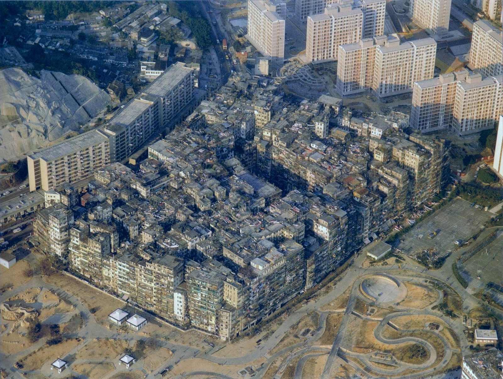

References / Photograph / 489
Kowloon Walled City from the air, 1989
Ian Lambot’s aerial photograph of Kowloon Walled City in 1989: one solid block of self-built towers, without streets, between new public housing estates.
- Source
- Wikimedia Commons: Kowloon Walled City - 1989 Aerial.jpg
- Creator
- Ian Lambot
- Made
- 1989
- Style
- Cyberpunk (agent-proposed, not yet reviewed by a person)
- Moods
- Dystopian, dense, gritty
- Evidence
- Downloaded and inspected the Commons rendition at 1920 × 1449 px of the 1942 × 1466 px file. Commons credits the photograph to Ian Lambot and names its source as City of Darkness and the book City of Darkness: Life in Kowloon Walled City (ISBN 1-873200-13-7).
- Reviewed
- Rights
- Open license, stored. License: CC-BY-SA-4.0. Rights policy

Context
Wikipedia: “Hong Kong’s Kowloon Walled City is particularly notable for its disorganized hyper-urbanization and breakdown in traditional urban planning to be an inspiration to cyberpunk landscapes.” Cyberpunk.
By 1987 the walled city had an estimated 33,000 residents. Demolition began on 23 March 1993 and finished in April 1994, and Kowloon Walled City Park replaced it. Wikipedia: Kowloon Walled City.
The Commons description notes that the new park on the site of the former Sai Tau Tsuen squatter settlement is visible at the south edge of the city. Commons.
Observed
- The walled city is one continuous mass of towers of about ten to fourteen storeys, with no visible streets between them, only a few narrow light wells.
- Its surfaces are weathered gray, brown, and stained white concrete, crowded with small windows, rooftop structures, washing, and aerials.
- Its outer walls rise sheer at the edges, like a single building.
- Clean, regular, pale pink housing towers stand above and to the right. A long slab block runs along the left side.
- The foreground is open park land under construction, with curved paths, small white pavilions, and a round paved structure.
- The view is in daylight, in soft, warm light.
Why it belongs
The contrast between the organic, self-built block and the planned towers around it is the cyberpunk city in miniature: an ungoverned megastructure inside a regulated city.
For graphics, the lesson is density and accretion, not neon: many small units packed into one mass with no empty space.
Borrow
Pack many small, slightly irregular panels into one solid block, with thin gaps as the only breathing room.
Set a dense, worn element against a clean, regular grid to show the conflict that the style is about.
Measured
Machine-extracted by tools/image-traits.py on . Full measurement.
- Mean chroma
- 0.1
- Palette
- #707575 9%
- #47515a 7%
- #3a4651 6%
- #8e8b7f 5%
- #a0998a 4%
- #817f72 4%
- #59646e 4%
- #5e625c 4%

